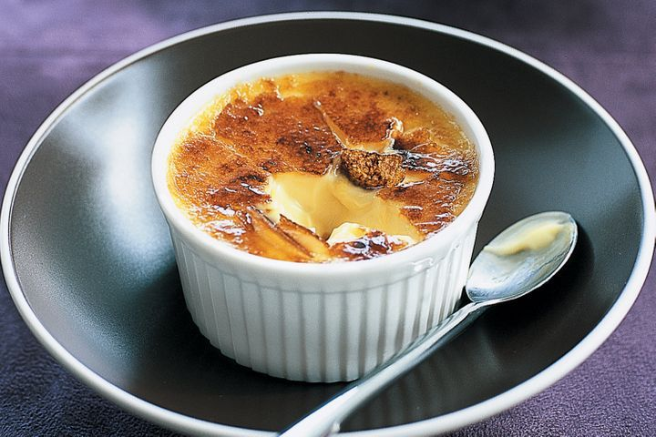
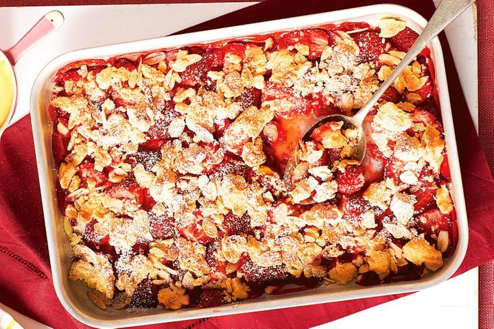
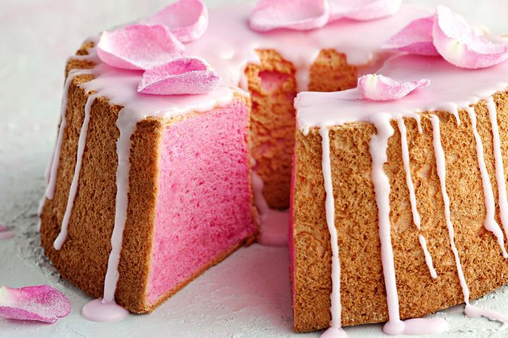
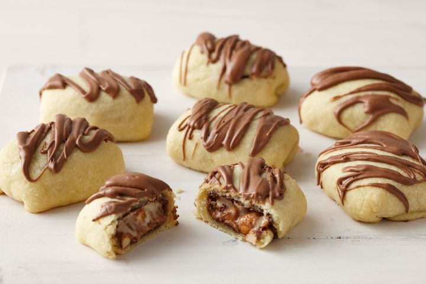

Amaretto Brulee

Ingredients
- 625ml (2 1/2 cups) thin cream
- 1 vanilla bean, split
- 7 egg yolks
- 100g (1/2 cup) caster sugar
- 60ml (1/4 cup) amaretto liqueur
- 2 tbsp brown sugar
Method
- Step 1:-
Preheat oven to 150°C. Place six 185ml (3/4-cup) capacity ovenproof ramekins in a large
roasting pan.
- Step 2:-
Place the 625ml (2 1/2 cups) thin cream and 1 vanilla bean, split in a saucepan over medium
heat Cook, stirring, for 5 minutes or until mixture comes to a simmer (do not boil).
Strain through a sieve into a heatproof jug. Use a small knife to scrape vanilla seeds from the bean into cream.
Discard bean.
- Step 3:-
Meanwhile, use a balloon whisk to whisk together the 7 egg yolks, 100g (1/2 cup) caster
sugar and 60ml (1/4 cup) amaretto liqueur in a bowl until well combined.
- Step 4:-
Whisk the hot cream mixture into the egg-yolk mixture.
Pour evenly among ramekins. Pour enough boiling water into the pan to
reach halfway up the sides of the ramekins.
- Step 5:-
Cook in oven for 30 minutes or until just set.
Remove ramekins from roasting pan and set aside for 2 hours to cool.
Cover with plastic wrap and place in the fridge for 6 hours to set.
- Step 6:-
Preheat grill on high. Sprinkle brulees with 2 tbsp brown sugar.
Cook under preheated grill, about 6cm from heat source,
for 2-3 minutes or until sugar bubbles and caramelises. Serve immediately.
Roasted strawberry crumble

Ingredients
- 375g strawberries, hulled, halved
- 2 tbsp caster sugar
- 1/2 cup plain flour
- 35g butter
- 2 tbsp flaked almonds
- Vanilla custard, to serve
Method
- Step 1:-
Preheat oven to 220C/200C fan-forced.
Lightly grease a 16cm x 26cm shallow roasting pan. Add 375g strawberries, hulled,
halved and half the 2 tbsp caster sugar. Toss to coat.
- Step 2:-
Combine 1/2 cup plain flour and remaining sugar in a medium bowl.
Add 35g butter. Using fingertips, rub butter into flour
mixture until mixture resembles breadcrumbs. Add 2 tbsp flaked almonds.
Stir to combine. Sprinkle over strawberry mixture, pressing
dough together with fingers to make small lumps.
- Step 3:-
Bake for 15 minutes or until top is golden and crisp.
Serve with Vanilla custard, to serve.
Almond and date cake

Ingredients
- 1 tbsp rice flour, plus extra for dusting
- 4 egg whites
- 1/2 lemon, juiced
- 1/2 cup caster sugar
- 1 1/4 cups almond meal
- 1 tbsp cocoa powder
- 1 cup dates, sliced
- 1/4 cup Coles Dried Cranberries
Lemon glaze
- 1 cup gluten free icing sugar
- 2 tbsp lemon juice
Method
- Step 1:- Preheat oven to 180C. Lightly grease a 20cm spring-form pan and dust with a little rice flour.
Line bottom with baking paper.
- Step 2:- In a large bowl, using an electric mixer, beat egg whites with a few drops of lemon juice until
soft peaks form. Gradually add sugar, beating until glossy,
firm peaks form.
- Step 3:- Fold in almond meal, cocoa and remaining lemon juice.
Toss dates and cranberries with the rice
flour and gently fold into the mixture.
- Step 4:-Spoon mixture into prepared pan. Bake for 30-35 mins until the cake begins to pull away from the
sides of the pan.
- Step 5:- For the Lemon Glaze: In a small bowl, mix icing sugar with enough lemon juice to make it
spreadable.
- Step 6:- Cool cake in pan on a wire rack for 5 mins, then loosen the sides of the pan and remove. While
still warm, top with lemon glaze and serve in slices.
Angel food cake

Ingredients
- 12 egg whites
- 1 1/2 tsp cream of tartar
- 315g (1 1/2 cups) caster sugar
- 150g (1 cup) self-raising flour
- Pink food colouring, to tint
- 300g (2 cups) icing sugar
- 2 tbsp water
- 1 tsp rose water
Sugared rose petals
- 1 medium pink unsprayed rose
- 1 egg white
- 100g (1/2 cup) caster sugar
Method
- Step 1:- For the sugared rose petals, line a tray with baking paper. Carefully peel off 1 medium pink
unsprayed rose,
selecting medium, nicely-shaped petals.Lightly whisk 1 egg white until slightly foamy. Brush petals
lightly with egg white.
Sprinkle with 100g (1/2 cup) caster sugar and shake off excess.Place on prepared tray and set aside for
2-3 hours to dry.
- Step 2:- Preheat oven to 180C/160C fan forced. Use electric beaters to beat 12 egg whites in a clean,
dry bowl until soft peaks form. Beat in the 1 1/2 tsp
cream of tartar of tartar until just combined. Gradually add 155g (3/4 cup) of the 315g (1 1/2 cups)
caster sugar, in 4 batches, beating well after each addition
until sugar dissolves. Sift 150g (1 cup) self-raising flour and remaining sugar together 3 times. Gently
fold flour mixture and a little Pink food colouring, to
tint into egg white mixture. Spread mixture into a 21cm (base measurement) ungreased angel food cake pan
(see Notes). Smooth the surface and wipe side of pan clean.
Bake for 20-25 minutes or until mixture springs back slightly when touched.
- Step 3:- Immediately invert the pan onto a wire rack (see Notes). Allow the cake to cool completely in
pan. Once cool, gently run a palette knife around both sides of the
pan to loosen cake. Gently ease the cake out of the pan. Place upside down on serving plate.
- Step 4:- Combine the 300g (2 cups) icing sugar, water and 2 tbsp water in a heatproof bowl. Place bowl
over a pan of simmering water (don’t let the bowl touch the water).
Cook, stirring, until smooth and mixture is the consistency of pouring cream. Tint pale pink with food
colouring. Drizzle icing over top of cake,
allowing icing to drip down the side. Set aside to set. Decorate with sugared rose petals.
Snickers rolls

Ingredients
- 1 cup plain flour
- 1 tbsp icing sugar
- 80g butter, chopped
- 2-3 tbsp chilled water
- 8 fun size Snickers bars
- 100g milk chocolate, melted
Method
- Step 1:- Preheat oven to 200C or 180C. Line a baking tray with baking paper.
Process 1 cup plain flour, 1 tbsp icing sugar and 80g butter, chopped until a crumb consistency. With
motor running, add enough chilled 2-3 tbsp chilled water until dough comes together.
- Step 2:- Place dough on a lightly floured bench. Knead into a ball. Divide dough into 8 portions. Roll
each portion out to 6cm x 11cm rectangles.
Unwrap 8 fun size Snickers bars, place one in the centre of each dough portion. Fold in the sides
then roll up to enclose. Place on prepared tray. Repeat. Refrigerate for 15 minutes.
- Step 3:- Bake for 15 minutes (if they explode slightly, cool briefly then press filling back in).
Drizzle with 100g milk chocolate,melted, Set aside for 15 minutes. Serve warm or cold.